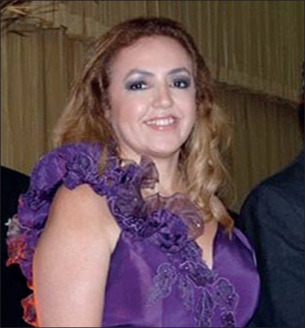

TRIBUTE FOR COVID-19 WARRIOR:- Who sacrificed their life to protect the patient from covid-19.
FOLLOW US
The 2019–2020 coronavirus pandemic is upending life on a global level as we know it. The highly infectious coronavirus disease 2019 (COVID-19) is caused by severe acute respiratory syndrome coronavirus 2 (SARS-CoV-2). It was first seen in Wuhan, Hubei, China where its outbreak was first identified in December 2019. After almost 3 months, on March 11, 2020, the World Health Organization recognized it as a pandemic considering its significant ongoing spread in multiple countries across the world.
While on one hand people across India and around the globe are largely confined to their homes with businesses and educational institutions all shut down in an attempt to contain the virus, and on the other hand doctors, health-care workers, and medical staff members are leading the battle against COVID-19 from the front. Putting their own lives at risk with selfless determination for the sake of saving lives, they truly are our heroes in these challenging times. While they are putting their own health, families, and most importantly their own lives at risk, the least we can do is appreciate their efforts and cooperate by staying safe indoors. That being said, it is good to see tributes pouring in for all the medical heroes working in scrubs. On occasion of the Doctors' Day (March 30, 2020 USA, july 1 india, and Australia), the stories of the medical heroes are inspiring and heartbreaking at the same time.
Needless to say, doctors, nurses and people working in health-care sectors are particularly vulnerable to the highly infectious disease. In response to the global pandemic, the under-resourced doctors are facing unprecedented challenges. The list of the sleep-deprived heroes includes doctors, nurses, medical cleaners, pathologists, paramedics, ambulance drivers, and health-care administrators. In the fight against coronavirus, the brave medical army stands strong with thermometers, stethoscopes, and ventilators as their weapons. Not to forget, medical researchers are working day in and night out against all odds, hoping to find the antidote to the disease.
Since the coronavirus outbreak, health-care professionals have not only experienced the gratification of healing patients and saving their lives but have also lost many battles along the way. On top of that, many doctors have even sacrificed their own lives in the line of duty.
Every day, the selfless warriors are giving it their all in health-care settings while cutting themselves off from their families and loved ones. The sacrifice that they are making for the safety and welfare of humanity is priceless and deserves lifelong gratitude on our end. Most importantly, we must reassess the value health-care workers hold in our lives and the kind of treatment they get from us. Among the several lessons this coronavirus pandemic has been teaching us, the biggest one is to find ways to sufficiently invest in the better and more efficient medical fraternity and give medical professionals the respect, compensation and infrastructure that they truly deserve once this crisis is over. Moreover, the world needs to work towards advancement in medical research and technology. Nothing will be a greater tribute to the health-care workers than this. That being said, we'd now like to highlight the heroic efforts of some courageous and inspiring doctors from across the globe who lost their lives while saving the lives of COVID-19 patients
IMA:said 800+ doctors died during second wave of Covid-19 across country
The national registry of Indian Medical Association (IMA) shows that 749 doctors have died in 1st wave Covid-19
And more than 800 doctors have lose their life in second wave of covid_19
As per the official note by the IMA, the number of doctors who lost their lives in the pandamic in Delhi stands at 128,fallowed by bihar at 115 and uttar pradesh at 79. state like maharastra and kerala where the prevelence of the delta plus variant of covid-19 is on a rise also reported deaths of doctors in double digits. maharastra reported 23 doctors deaths and kerala reported 24 deaths.
Pandicherry reported the lowest deaths of logging one death only
number of doctors died in differnt part of my country
| s.no | staes | number of deaths |
|---|---|---|
| 01 | dehli | 128 |
| 02 | bihar | 115 |
| 03 | uttar pradesh | 79 |
| o4 | west bengal | 62 |
| 05 | karnataka | 69 |
| 06 | tamil nadu | 50 |
| 07 | rajasthan | 44 |
| 08 | andra pradesh | 40 |
| 09 | keral | 24 |
| 10 | jharkhad | 39 |
| 11 | assam | 10 |
| 12 | chhattisgarh | 7 |
| 13 | Gujarath | 39 |
| 14 | Goa | 2 |
| 15 | haryana | 19 |
| 16 | jammu and kashmir | 3 |
| 17 | Madhya pradesh | 16 |
| 18 | maharastra | 23 |
| 19 | manipur | 6 |
| 20 | Odisha | 36 |
| 21 | pondicherry | 1 |
| 22 | punjab | 3 |
| 23 | telengana | 37 |
| 24 | Tripura | 2 |
| 25 | uttarakhad | 2 |
the above table shows the deaths of doctor in different states
"pondichhery reported the lowest deaths of docters by logging one death only"
REMEMBER THE INDIAN DOCTORS, WHO LOST THEIR LIFE WHILE FIGHTING AGAINEST THE COVID-19
k. k. aggarwal(cardiologist):
krishna kumar aggarwal (5 september 1958-17 may 2021)was an indian physicionand senior cardiologist who was confedaration of medical association of asian anad Oceania(CMAAO),President of the heart care foundation of india and the past national president of indian medical association.in 2010,the governmenet of india honored him with the padma shri,India's fourth-highest civilian award,for his contribution to the field of medicine

Death:
Aggarwal's family announced that he was undergoing treatment for a COVID-19 infection in Delhi.[14] Aggarwal died on 17 May 2021 in New Delhi while receiving treatment for COVID-19.k k aggarwal in His last viral video:
Dr ANAS MUJAHID:
Mr Mujahid, a junior resident doctor at the department of Obstetrics and Gynaecology in Delhi's GTB hospital, died of COVID-19 on May 9 -- just a day after he contracted the virus
"Late Dr Anas was hard working and serving the people of Delhi at GTB hospital since the time Corona emerged in Delhi. Many Corona warriors like Dr Anas are on the frontline helping the people of Delhi, and it is because of people like Anas that we are able to save lives and the Delhi government is able to fight the Corona pandemic," said Mr Kejriwal in a statement.
कोरोना काल में दिन-रात मेहनत कर रहे स्वास्थ्य कर्मी ही हमारे हीरो हैं, डॉ.अनस मुजाहिद GTB अस्पताल में डॉक्टर थे। कोरोना मरीज़ों का इलाज करते हुए मात्र 26 वर्ष की उम्र में शहीद हो गए
— Arvind Kejriwal (@ArvindKejriwal) May 22, 2021
उनके परिवार का ख़्याल रखना हमारा फ़र्ज़ है, आज उनके परिवार से मिलकर ₹1 करोड़ की सहायता राशि दी। pic.twitter.com/DWOflD0bMb
"Late Dr Anas was hard working and serving the people of Delhi at GTB hospital since the time Corona emerged in Delhi. Many Corona warriors like Dr Anas are on the frontline helping the people of Delhi, and it is because of people like Anas that we are able to save lives and the Delhi government is able to fight the Corona pandemic," said Mr Kejriwal in a statement. "I was talking to Mujahid's father Dr Mujahidul Islam, and when I assured him of any help that he might need in the future, he said that he and his family does not need anything, his only desire is that he and his family could serve the nation. I salute his thoughts and we will stand beside them in any assistance that they shall need in the future", the chief minister added. Dr Islam thanked the chief minister and the Delhi government for helping the family in this time of distress and said he wants his other children also to "serve the nation" the way his son Mujahid did.
Delhi Chief Minister Arvind Kejriwal provided financial assistance of ₹ one crore to the family of late "Corona warrior" Dr Anas Mujahid.
K ROJI:
A 23-year-old doctor in Andhra Pradesh lost her life to the Covid-19 recently. A young doctor, K Roji, who was treating Covid-19 patients at Subbamma Covid Stabilisation Centre in Sakhinetipalli in East Godavari district of Andhra Pradesh died due to the infection on Tuesday. After completing her MBBS at Alluri Seetha Ramaraju Academy of Medical Sciences (ASRAM) College in Eluru, Roji was serving as a house surgeon at ASRAM Hospital while perusing her MS and was actively saving the lives of those infected with the coronavirus. Unfortunately, a few days ago, she contracted the virus and was admitted to a local hospital on Monday. She died within hours.
Dr JAVED ALI:
A Muslim Corona warrior who was fighting COVID-19 as a front line worker lost the battle to the deadly virus after contracting. Dr Javed Ali a 42-year-old Muslim doctor, who was working with Delhi government's National Health Mission since March died yesterday of coronavirus.
Dr Javed Ali had been on the frontline in the fight against the highly contagious illness since March. He tested positive for coronavirus on June 24 and was hospitalised for treatment over the next three weeks, finaly we lose her.
DR DIMPLE ARORA CHAWLA:
Dr Dimple Arora Chawla, a dentist, was seven months pregnant with her second child when she tested positive for coronavirus in April. Two weeks later, the 34-year-old lost her unborn baby. The next day, the doctor too lost her battle to the virus. She leaves behind her three-year-old son and her husband. Days before her death, the Delhi-based woman had put out a video message to her family and friends, urging them not to take the deadly virus lightly. "I am making this video with great difficulty. I really want to tell each and everyone who knows me, please don't take corona so lightly. Very bad, very bad symptoms. I am not able to speak. But I really want to convey my message to all," she says in a two minute 20 second-video recorded on April 17. "Please wear mask. Whenever you go outside, whenever you interact with people, outside and at home, for your near ones' and dear ones' safety," Dr Dimple Arora Chawla says.
This video was shared on social media by her husband, with thousands of people posting messages of condolences.
"It was in her innate nature to inform people about what precautions they can take. So she had actually made this for our family and friends. But her untimely demise made me post this message to the world so that the world can know that you should not take Covid so lightly," the grieving husband said poignantly.
"It was her message and you should be wearing a mask not just for yourself but for the elderly or pregnant women... That was my wife's message. I just want people to know about it."
his wife's battle with Covid, Mr Chawla said she her oxygen level started dipping on April 21, 10 days after she tested positive. She was immediately taken to hospital where she was given Remdesivir and administered two rounds of plasma therapy, Mr Chawla said, adding that her condition started to dip after that.,
Dr Dimple Arora Chawla, or Dipika, has her family and friends called her, went into labor on April 25. An ultrasound showed that the baby had no heartbeat. "The baby had died in the womb. Initially, I didn't tell her. But the doctors said we will need to get her to do a caesarean and abort the baby so that it does not harm her," her husband said.
"She was very brave and strong." The young woman, however, died the next morning.
Pregnant and lactating women have not been part of any COVID-19 vaccine clinical trial in India so far and thus, the government has advised that these two groups should not be administered the vaccine.
| SL.NO | Name of the doctors | Age |
|---|---|---|
| 01 | Dr.LAXMAN | 27 |
| 02 | DR.JAHAN IQBAL AHMED | 60 |
| 03 | PROP DR.JN PANDE | 60 |
| 04 | DR.SONI MADANMAL M | 81 |
| 05 | DR.VIKAS SOLANKI | 24 |
| 06 | DR.RADHA | 65 |
| 07 | DR.GEETHA | 60 |
| 08 | DR.SHAUKAT ALI | 45 |
| 09 | DR.JYOTHI LAKSHMI | 50 |
| 10 | DR.SIMON HERCULES | 55 |
| 11 | DR.SAYEED AHMAD ALI | 62 |
| 12 | DR.DIBAKAR DAS | 65 |
The doctors who died in covid-19 on different parts of my country
The who died due to covid-19 on different countries
| sl.No | photo | name | about |
|---|---|---|---|
| 01 |  |
sara bravo lopez | Primary care physician. She was born on June 20, 1991, in Ciudad Real, Spain, and died on March 29, 2020, in Alcazar de San Juan, Spain, aged 28 years. |
| 02 |  | Claudia Nogueira Cardoso | Endocrinologist. She was born on Oct 12, 1963, in Rio de Janeiro, Brazil, and died on April 8, 2020, in Rio de Janeiro, aged 56 years. |
| 03 |  |
Livia Carrion | Former Director of Epidemiology of the Institute of Public Health, Bolivar state, Venezuela. She was born on Sept 9, 1953, in Puerto de Hierro, Venezuela, and died on July 25, 2020, in Ciudad Bolivar, Venezuela, aged 66 years. |
| 04 | Nino Antonio Cassanello Layana | Internal medicine specialist. He was born on Jan 12, 1945, in Guayaquil, Ecuador, and died there on March 26, 2020, aged 75 years. | |
| 05 |  |
Adil El Tayar | Surgeon and organ transplant specialist. He was born on March 10, 1956, in Atbara, Sudan, and died on March 25, 2020, in London, UK, aged 64 years. |
| 06 |  |
Salvacion “Sally” Rodriguez Gatchalian | President of the Philippine Pediatric Society and former Assistant Director of the Research Institute for Tropical Medicine at the Philippine Department of Health. Born on Dec 4, 1952, in Manila, Philippines, she died on March 26, 2020, in Manila, aged 67 years. |
| 07 | Mustafa Kamal | Surgeon and Vice Chancellor of Nishtar Medical University in Pakistan. He was born on Sept 15, 1959, in Multan, Pakistan, and died there on July 15, 2020, aged 60 years. | |
| 08 | Richard Kisser | Consultant surgeon. He was born on Oct 26, 1962, in Tema, Ghana, and died on July 2, 2020, in Accra, Ghana, aged 57 years. | |
| 09 |  |
Jitendra Nath Pande | Pulmonologist and former head of the Department of Medicine at the All India Institute of Medical Science. Born on June 14, 1941, in Shikohabad, India, he died on May 23, 2020, in New Delhi, India, aged 78 years. |
| 10 | Raffaele Pempinello | Expert in infectious diseases. He was born on May 7, 1944, in Naples, Italy, and died there on April 29, 2020, aged 75 years. | |
| 11 |  |
Lungile Pepeta | Paediatrician and Executive Dean of the Faculty of Health Sciences at Nelson Mandela University, South Africa. He was born on July 16, 1974, in Bizana, South Africa, and died on Aug 7, 2020, in Port Elizabeth, South Africa, aged 46 years. |
| 12 |  |
Ratih Purwarini | General practitioner and volunteer who provided support to survivors of gender-based violence. Born in Jakarta, Indonesia, on Nov 23, 1973, she died on March 31, 2020, in Jakarta, age 46 years. |
FINAL WORD:
While the deadly virus has brought attention to the inadequacies in the health-care systems across the globe, doctors and health-care workers have been risking their lives to save all of us. They are also risking the lives of their family members, which indeed is a huge sacrifice. On top of that, the shortage of face masks, shields, and protective gear is not helping. And this makes the efforts of the medical workers even more extraordinary. On occasion of theDoctors' Day(july 1st in india), the stories of the medical heroes putting themselves on the forefront to fight the virus are inspiring and heartbreaking at the same time. They deserve all the appreciation and support. The sacrifice of doctors and healthcare workers across the globe will not go to waste. Humanity will always be grateful to them for what they are doing during these unprecedented times. The respect for healthcare professionals has grown manifolds in the hearts of people. It is good to see that the Government of India along with the governments worldwide have decided to allocate more budget for healthcare in their respective countries. The world is taking the health, healthcare professionals and hospitals more seriously, as it appears. More work is expected to be done for hospitals and intensive care units (ICUs) to strengthen the healthcare infrastructure in India as well as in countries across the world.